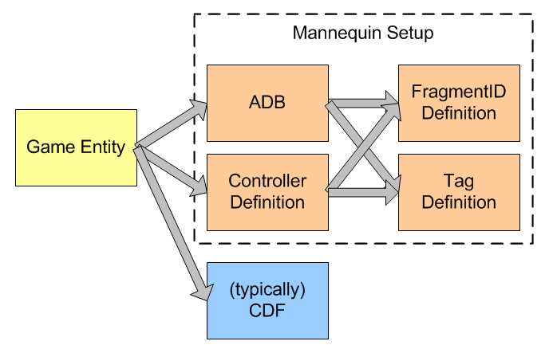
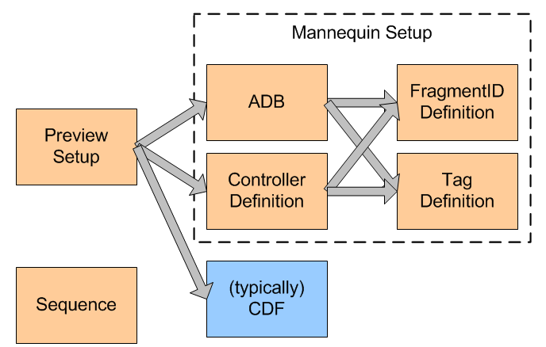

Files used by the Game
Schematically, this is how the game refers to the mannequin files and how they refer to each other:

It is simplified a bit as ADB files, FragmentID Definition and Tag Definitions can hierarchically refer to other files of their own type. And FragmentID definitions can refer to Tag Definitions to define FragmentID-specific Tag Definitions.
- Controller Definition File (xxxControllerDefs.xml) – Used to define a mannequin setup (this is the file you will typically refer to from your entity's lua file).
- Animation Database File (ADB) – Stores fragments and transitions (see also Fragments and Mannequin Transitions). It is also referred to from your entity's lua file, and other systems like the hit death reaction system might refer to them independently.
- Tag Definition File (xxxTags.xml) – Stores tag definitions (see also Mannequin Tags & Tag Definitions). It is referred to from both the Controller Definition and Animation Database files.
- FragmentID Definition File (xxxActions.xml) – Stores fragmentID definitions. It is referred to from both the Controller Definition and Animation Database files.
Files only used by the Editor
The editor runs independent of the game, so has to use its own setup file. Compare this picture with the picture above, the setup file effectively replaces whatever setup the Game Entity uses. The Sequence file is independent of all this.

- Preview Setup File (xxxPreview.xml) – Used to configure the editor.
- Sequence File (xml) – Used to store test sequences.